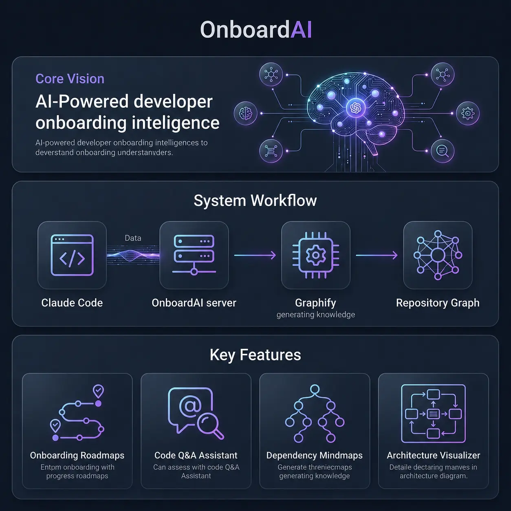

Transform repository knowledge graphs into day-by-day learning paths, call-flow mindmaps, and task-specific developer guidance. Integrates seamlessly with Claude Code through MCP.
OnboardAI is a developer onboarding intelligence system designed to dramatically shorten developer ramp-up times. Instead of forcing new hires or interns to read through thousands of lines of code, OnboardAI acts as a translation layer between raw repository structures and human learning pathways.
By integrating with Claude Code via the Model Context Protocol (MCP) and using Graphify as its source of truth, it automatically turns codebase relationship graphs into day-by-day roadmaps, visual call-flows, and personalized work instructions.
Integrates directly as a local MCP server, allowing developers to query repository details seamlessly inside their AI chats.
Uses code abstract syntax trees (ASTs) and connectivity indexes as the base source of codebase truth.
Processes all directory scans, graphs, and roadmaps locally on your development machine. No cloud dependencies.
Explore the built-in intelligence features packed into our MCP server.
Auto-generates structured 5-day studies. Uses Graphify communities and coupling weight analysis to order modules from simple utility layers to entry points. Fully tailorable by developer role.
{
"day": 2,
"theme": "Foundational Layers",
"details": "- Community 2 (database schema & adapters)\n- Community 6 (util methods)"
}
Ask repository Q&A queries inside Claude and supply the specific issue description. The assistant traverses the graph and maps coordinates for your changes.
Instantly generates clean Mermaid diagrams representing your code structure. You can view structural mindmaps, dependency flows, or class-to-class call pathways.
mindmap
root((OnboardAI))
graph
graph_generator
knowledge
graphify_adapter
onboarding_plan
OnboardAI leverages Graphify output (code AST + analysis data) as its source of truth, loading data into a NetworkX graph structure to generate developer guidance.

Get OnboardAI running locally on your project in less than a minute.
Install OnboardAI and its CLI command from PyPI:
pip install onboardaiThis installs the Python MCP SDK, networkx, and the global command shortcut onboardai.
Link the MCP server to the Claude Code CLI:
claude mcp add onboard-ai onboardaiClaude will automatically detect the executable shortcut and launch the server whenever it needs repository details.
No subscription? Run a local client simulation session:
$env:PYTHONIOENCODING="utf-8"
python test_client.pyThis script initializes the server locally, queries and prints tool lists, and displays roadmap output without needing cloud connections.
Traditional repositories have dependency charts but lack onboarding flow. OnboardAI bridges this gap, translating raw relationships into developer roadmaps.
New developers don't need to read thousands of lines of code. OnboardAI surfaces the critical core abstractions (hubs) first.
Modules are organized sequentially based on actual imports, ensuring developers learn baseline layers before logic controllers.
Provide the feature task you're assigned, and OnboardAI immediately highlights the specific methods and files you should read.
Got questions about privacy, LLM requirements, or local setups?
No! For code-only codebases, Graphify runs its full AST parsing locally and writes files without needing an LLM key. OnboardAI then loads those local files and processes all connectivity logic offline.
Yes. OnboardAI is completely local-first. All parsing, graph traversal, and community sorting happen directly on your local developer machine. No codebase data is sent to external clouds.
Graphify generates the raw data graphs of your repository. OnboardAI sits on top of that graph as an intelligence layer, generating structured learning paths, answering onboarding Q&A, and providing task-specific developer instructions.
Any standard MCP client is supported! This includes Claude Code CLI, Claude Desktop App, Cursor, VS Code (via Copilot Chat), and other custom coding agents.